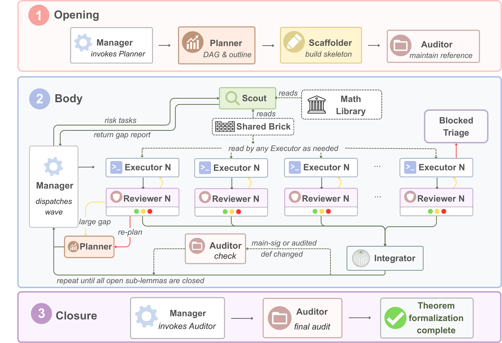
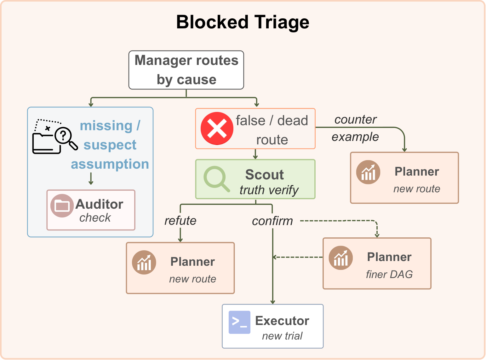

Uses a multi-agent LLM pipeline to formalize asymptotic statistics theorems from van der Vaart in Lean 4 with Mathlib, released as an axiom-clean library.
Abstract
Asymptotic statistical theory is a challenging domain for AI-assisted formalization: its central results mix convergence statements, asymptotic expansions, functional analysis, and regularity conditions that have a large gap from existing infrastructure in Lean 4 formalization. To address these challenges, we propose a hypothesis-disciplined Lean 4 formalization pipeline built from multiple agents: a manager that coordinates seven specialist roles for proof planning, skeleton scaffolding, Mathlib reconnaissance, proof construction, integration, independent review, and audit. The main methodological discipline is the hypothesis-disciplined audit, implemented by the Auditor agent: every main-theorem hypothesis and concept-layer field must be anchored in the source mathematical prose, justified as a Lean encoding adapter, marked as source-implied, or rejected as an unsupported strengthening. Using this workflow, we build a systematic formalization of asymptotic statistical theory, especially the parametric and semi-parametric models' asymptotic distribution and efficiency results. The resulting Lean development is axiom-clean and source-faithful, with Lean-checked and human-audited proofs of core parametric and semi-parametric theorems organized so that theorem-agnostic infrastructure and statistical concept definitions are separated from theorem-specific assembly. The formalization results are available at https://github.com/junwei-lu/Lean-Asymptotic-Statistical-Theory.
Problem
Asymptotic statistical theory (local experiments, differentiability in quadratic mean, efficiency bounds) is largely absent from machine-checked mathematics and poorly covered by Mathlib. Agentic formalization risks two failure modes: 'hypothesis laundering', where undischarged obligations become extra theorem hypotheses, and 'definition drift', where they are hidden as fields of concept definitions.
Approach
A manager agent coordinates seven specialist roles: Auditor, Planner, Scaffolder, Scout (Mathlib reconnaissance), Executor, Reviewer and Integrator. They work through task cards and isolated git worktrees. An Auditor-enforced hypothesis-disciplined audit requires each main-theorem hypothesis and concept-layer field to be anchored in the source text, justified as a Lean encoding adapter, marked as source-implied, or rejected. The resulting library separates theorem-agnostic shared infrastructure from statistical concept definitions and theorem-specific assembly.

Figure 1 : Multi-agent architecture and runtime flow: a theorem’s movement through the Opening, Body, and Closure phases, with the Body expanded into one parallel execution wave dispatched by the Manager across the specialist roles.

Figure 2 : Triage of a blocked Executor return: a missing or suspect assumption routes to the Auditor ’s drift control, while a doubted sub-lemma is truth-verified by a Scout .
Results
The authors produced an axiom-clean, human-audited Lean 4 library covering five cornerstone parametric and semi-parametric theorems from van der Vaart's Asymptotic Statistics. These include local asymptotic normality, the convolution theorem and the local asymptotic minimax bound. The library is released on GitHub.